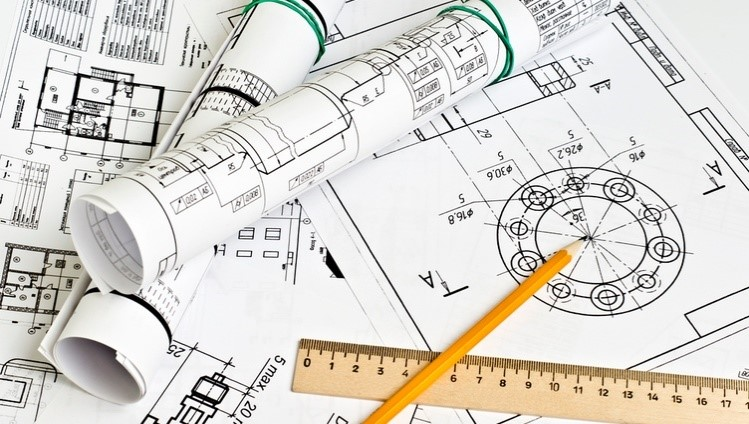

Es la aplicación de conocimientos científicos y matemáticos para diseñar y construir estructuras, máquinas y otros elementos que resuelvan problemas prácticos y mejoren la calidad de vida.


Es la aplicación de conocimientos científicos y matemáticos para diseñar y construir estructuras, máquinas y otros elementos que resuelvan problemas prácticos y mejoren la calidad de vida.
Los ingenieros utilizan el método científico para investigar problemas, formular hipótesis, realizar experimentos y analizar resultados.
El diseño implica crear soluciones innovadoras y prácticas, mientras que el análisis se centra en evaluar la viabilidad y eficiencia de estas soluciones.
Conocer las propiedades de los materiales y las tecnologías disponibles es crucial para seleccionar los más adecuados para cada proyecto.
Los ingenieros deben planificar, ejecutar y supervisar proyectos, asegurando que se completen a tiempo y dentro del presupuestoLa ética profesional y la sostenibilidad son fundamentales para garantizar que los proyectos de ingeniería beneficien a la sociedad y al medio ambiente.
La ética profesional y la sostenibilidad son fundamentales para garantizar que los proyectos de ingeniería beneficien a la sociedad y al medio ambiente.
Es el estudio de sistemas complejos para entender sus componentes y cómo interactúan entre sí. Esto es crucial para diseñar y mejorar sistemas eficientes y efectivo.
Se ocupa de los campos eléctricos y magnéticos y sus efectos. Es una base importante para la ingeniería eléctrica y electrónica.
Involucra la supervisión y el mantenimiento de la calidad en los procesos de producción y fabricación para asegurar que los productos cumplan con los estándares establecido.
Se enfoca en el diseño, desarrollo y mantenimiento de sistemas de software. Incluye principios de programación, arquitectura de software y gestión de proyectos.
Aplica principios científicos y de ingeniería para mejorar el medio ambiente, incluyendo el control de la contaminación y la gestión de recursos naturales.
Estudia las propiedades de los materiales y cómo se pueden utilizar y mejorar para aplicaciones específicas. Es crucial en la ingeniería civil, mecánica y aeroespacial.